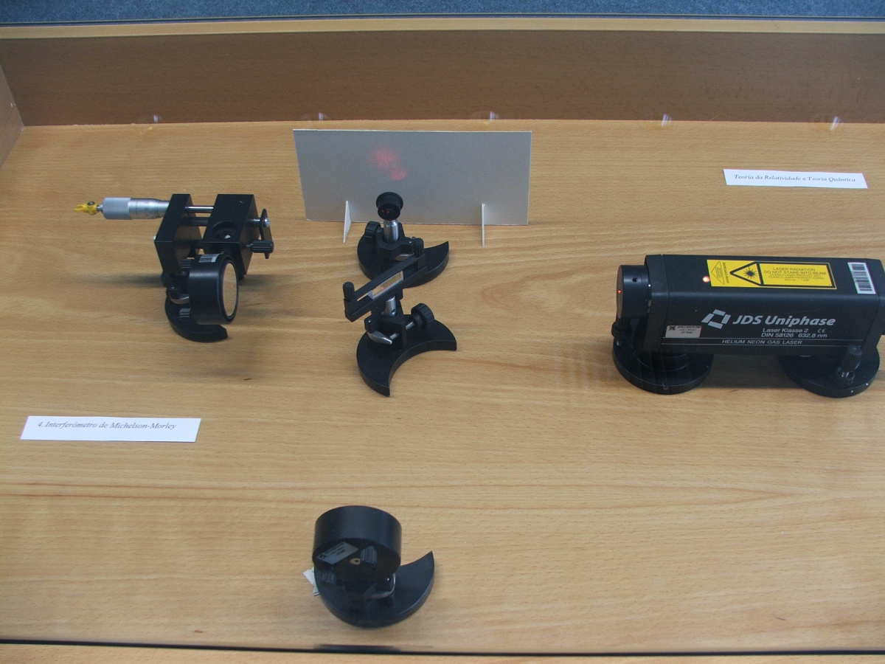

Michelson interferometer
By the end of the XIX century Maxwell's contributions to the theory of electromagnetism established the wave nature of light as an electromagnetic wave. Namely, a combination of time-varying electric and magnetic fields that can prevail even in the absence of any charges or electric currents.
One of the biggest successes of Maxwell's electromagnetic theory was that it could correctly predict the speed of light, from the values of the electric and magnetic constant, in very good agreement with the value measured experimentally for the speed of light.
But since the values of the electric and magnetic fields are different when measured in a moving reference frame, the speed of light could not be the same in all reference frames. It also seems evident that if we move with respect to the medium where a wave is propagating, we will measure a different speed for that wave; thus the speed at which a wave propagates is different in different frames.
Most XIX century physicists believed there was an absolute space (the hypothetical ether) where Maxwell's equations would be valid. The speed of light derived from those equations would be the speed of light with respect to that absolute space. Measuring the speed of light in deifferent reference frames would then allow us to determine the absolute speed of those frames.
Many experiments were conducted using light from the stars and light from sources on Earth. All of those experiments always failed in detecting any differences in the speed of light; it seemed impossible to detect any differences when the source and/or the observer were in motion. After each new failed experiment a new amendment would be introduced into the theory of ether to account for that failure, such as the principle of ether dragging by sources or observers. Ether dragging didn't seem to follow any simple rules but it rather appear as an artifice that could adjust any possible result.
An active research activity in that area led Michelson to conceive several experimental devices to detect minute differences in the speed of light in a moving reference frame. The evolution of those devices culminated in an interferometer known as Michelson interferometer, where any effect of ether dragging could clearly be eliminated.
A Michelson interferometer splits a light ray into two perpendicular beams s the ray passes through a semitransparent mirror that reflects half of the light and lets the other half pass through. The two beams, emitted from the same source, are then reflected back to the beam splitter, where they interfere with each other creating an interference pattern that is projected into a screen.
The distance travel by the tow beams (optical paths) can be adjusted with high precision. A slight variation on the time taken by the two beams to travel those paths can be observed as a shift of the firnges in the interference pattern. If the speed of light were different in different directions (due to the motion of the Earth), as the interferometer were rotate the interference pattern should move.
Michelson and Morley conducted that experiment failing to observe any effect of the motion of Earth on the speed of light. What they observed was that the speed of light was the same in all directions. Lorentz explained that result assuming a contraction of the ether in the direction of the motion of the Earth. But it was not possible to find a cause and a mechanism for that contraction.
In 1905 Einstein publishes his theory of relativity, according to which the speed of light should be the same in any reference frame. One of the consequences of that postulate is that time and distance are no longer absolute quantities, as our common sense tells us, but can take different values for different observers. There is no absolute space or ether.
Accepting only two simple principles: the laws of physics are the same for any observer and the speed of light is constant, Einstein derives the same equations obtained by Lorentz. But the contraction of distance and dilation of time are real relativistic effects, with many consequences that have already been observed in experiments, rather than just a contraction of the ether as believed by Lorentz.